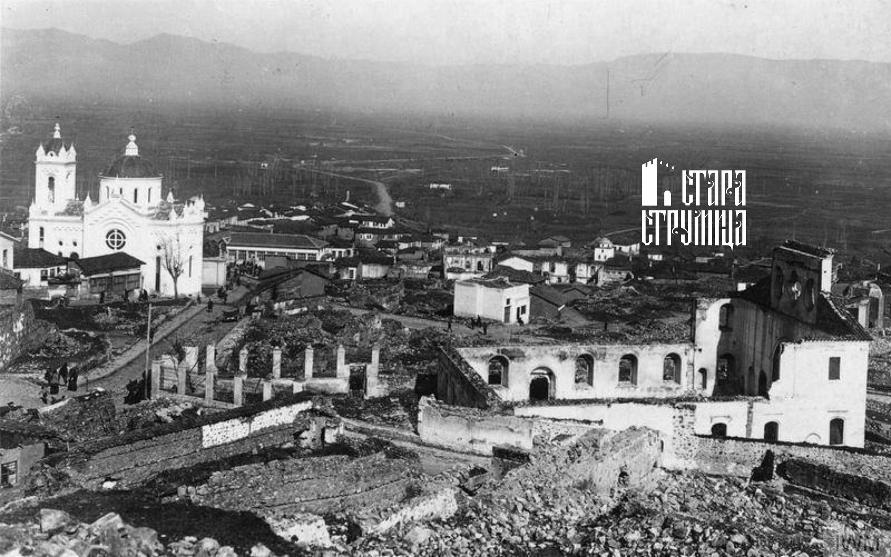

После првата светска војна, привремената заедничка управа на Бугарите и Србите во Струмица завршила во ноември 1919 година. Според одредбите на Нејскиот мировен договор, на Бугарија и‘ било наложено Струмица и нејзината околина да му ги отстапи на новоформираното Кралство на Србите, Хрватите и Словенците. На 16 ноември во Струмица влегле српски трупи и четници, а на 24 ноември 1919 година била извршена промена на цивилната власт.

-
Струмица станала седиште на еден од двата најважни излезни пунктови на ВМРО.
Функцијата на пунктов началник на ВМРО ја вршел Костадин Ципушев, по директва на Тодор Александров.
-
По крајот на Првата Светска Војна започнал и процесот на колонизација на српско население на кое му се доделувало најобработливото замјиште, а од друга страна српските власти вршеле и асимилација врз локалното население кога биле менувани презимињата и целосното население било познато како „јужносрбијанци“. Во ваквата ситуација извесен Александар Андријевиќ шест месеци работел како претседател на Првостепениот суд во Струмица. За време на својата работа во Струмица, Андријевиќ, како претседател на судот имал прилика да разговара со прилично голем број струмичани, по кое во 1923 година ја издал книгата „Струмица, земља и народ“ каде го запишал разговорот со некој струмичанец:
„Вие сте секако Србин?“ – го прашувам еден од парничарите во судот. „Е, така е сега. Кога беа тука Бугарите јас бев Бугарин. Пристигнаа Србите, јас сум Србин, ама – христијанин сум.“ „Вие сакате да сте поблиску до Грците.“ „Е не, џанум, Грк е нешто друго јас сум Македонец.“ – поита да ми одговори. И кога така вели дека е Македонец, а тоа првично и најчесто ќе го слушнете, струмичанецот смета дека со тоа си угодил и себеси и на вас; и не ве оддалечил од себе и останал во својата куќа, свесен дека зборот „Македонец“ нема етнички да го одведе ни во Србите ни во Бугарите.
-
На 28 јули 1924 година се случил голем пожар со поголеми последици – биле зафатени една четвртина од стариот дел на градот и биле изгорени неколку дуќани.
-
Во почетокот на март 1931 година во Струмица се случил силен земјотрес во кој биле срушени 20 куќи и оштетени околу 1.000 домови.
-
Една училишна зграда била изградена за дваесетдвегодишното владеење на Кралство Југославија, на местото на некогашна грчка црква (денес ОУ „Маршал Тито“). Наставата се изведувала на српски јазик.
-
Струмичка околија била позната како крај каде што имало најголем процент на заболувања од маларија. По отворањето на Маларичната станица во 1925 година, лекувањето на маларијата се одвивало нешто подобро. Во 1925 година, процентот на заболени од маларија изнесувал околу 65— 85% од вкупниот број на населението. Причината главно се должела на близината на Моноспитовското Блато.
-
Во Струмичко дејствувале главно две партии — Радикална и Демократската, кои во однос на политиката кон македонскиот народ не се разликувале. Во 1927 година, д-р Фиданчев бил избран на листата на Радикалната партија за претседател на Општина Струмица.